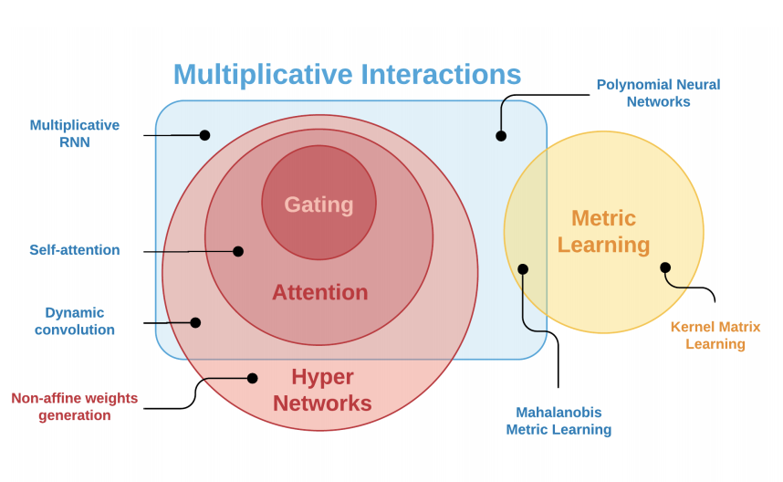
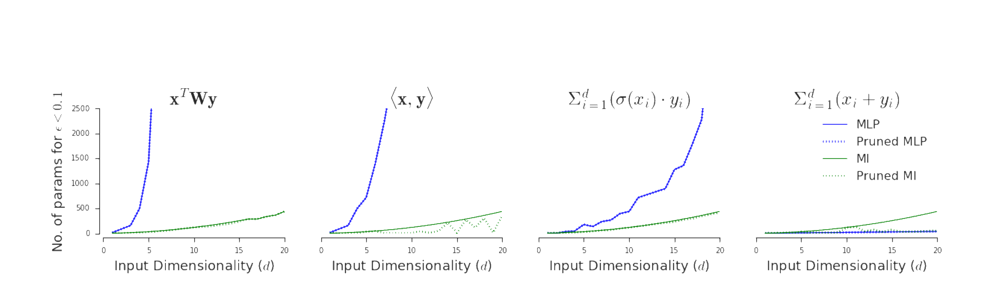

Goal: Given $x \in \mathbb{R}^n \text{ and } z \in \mathbb{R}^m$, model $f_{target}(x,z) \in \mathbb{R}^k$. Introduce layers with multiplicative interactions:
\begin{equation}
\label{eq:multiplicative_interactions_1}
f(x,z) = z^T W x + z^T U + Vx + b = W'(z) x + b'(z)
\end{equation}
where $W \in \mathbb{R}^{m \times n \times k}$, $U \in \mathbb{R}^{m \times k}$, $V \in \mathbb{R}^{k \times n}$ and $b \in \mathbb{R}^{k}$; $W' = z^TW + V$ and $b' = z^TU+b$.
Equivalence to other techniques
Multiplicative interactions, or special cases of them, can be interpreted as various other established deep-learning techniques.

Venn diagrams of multiplicative interactions with respect to other model classes commonly used in ML.
Hypernetworks Weights $W'$ and $b'$ for main network are generated from hypernetwork with input $z$.
Gating If we restrict our attention to diagonal forms $W' = diag(w)$ the matrix-vector product $W' x$ is the same as Hadamard product $x \circ w \rightarrow$ gating.
Scales and Biases If we further restrict attention to not only any diagonal matrix $W' = diag(w)$, but those with $W' = \alpha {\bf I_n}$, Hadamard product becomes a simpler scaling.
Metric Learning Mahalanobis distance looks like multiplicative interaction: $d_C(x,z) = (x-z)^TC(x-z)$. Difference is that in metric learning one usually explicitly defines losses over tuples, while here we learn a metric internally.

Number of parameters needed for a regular, single layer MLP (blue line) to represent the function up to 0.1 MSE.
Let $\mathcal{H}_{mlp}$ denote the hypotheses space of standard MLPs with ReLU activation function, and let $\mathcal{H}_{mu}$ denote the hypotheses space of analogous networks, but with each linear layer replaced with a multiplicative layer, then we have $\mathcal{H}_{mlp} \subsetneq \mathcal{H}_{mu}$.
References
[1]Jayakumar, S. M., Menick, J., Czarnecki, W. M., Schwarz, J., Rae, J. W., Osindero, S., Teh, Y. W.,Harley, T., and Pascanu, R. Multiplicative interactions and where to find them